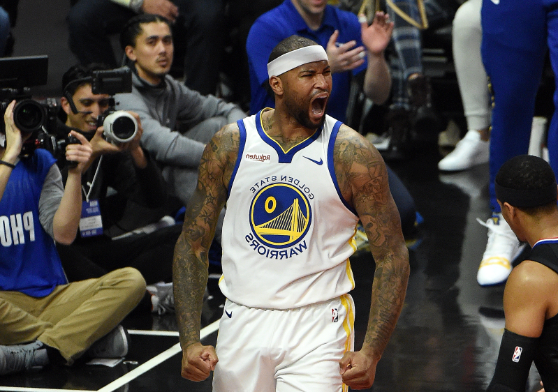
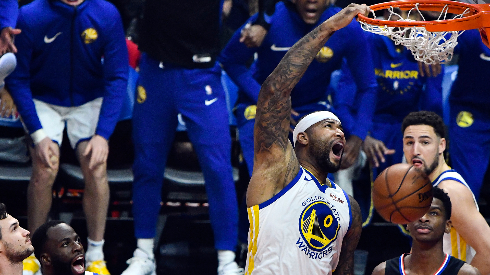

Profile Intro
DeMarcus Amir Cousins (born August 13, 1990) is an American professional basketball player for the Los Angeles Lakers of the National Basketball Association (NBA). Nicknamed "Boogie",[1] he played college basketball for the Kentucky Wildcats, where he was an All-American in 2010. He left Kentucky after one season, and was selected with the fifth overall pick in the 2010 NBA draft by the Sacramento Kings. In his first season with the Kings, Cousins was named to the NBA All-Rookie First Team, and from 2015 to 2018, he was named an NBA All-Star. He is also a two-time gold medal winner as a member of the United States national team, winning his first in 2014 at the FIBA Basketball World Cup and his second in 2016 at the Rio Olympics.
Named the 2003–04 NBA Rookie of the Year, he soon established himself as one of the league's premier players; he won the NBA Most Valuable Player Award in 2009 and 2010. After failing to win a championship with Cleveland, James left in 2010 to sign as a free agent with the Miami Heat. This move was announced in an ESPN special titled The Decision, and is one of the most controversial free agent decisions in American sports history. James won his first two NBA championships while playing for the Miami Heat in 2012 and 2013.
High School Career
Cousins attended LeFlore Magnet High School in his hometown of Mobile, Alabama.He was a first-team Parade All-American in 2009, and played in the 2009 McDonald's All-American Boys Game, finishing with 14 points and 8 rebounds.Cousins also played in the 2009 Nike Hoop Summit at the Rose Garden in Portland and the Jordan Brand Classic at Madison Square Garden where he scored 10 points for the black team.Cousins led LeFlore to the Alabama class 6A Final Four against Hillcrest that beat Austin High School to progress to the state championship; falling short to future college teammate Eric Bledsoe and Parker High School.Overall recruiting rankings: Scout: 2 (C); 3 (national); 1 (school) Rivals: 1 (PF); 2 (national) ESPN: 1 (C).On July 6, 2019, he signed a one year contract with the Lakers.
College Career
Cousins first committed to Alabama-Birmingham on February 28, 2008, but never signed a letter of intent.Cousins decommitted from UAB and committed to Memphis on March 9, 2009. He reopened his recruitment after then Memphis coach John Calipari was hired at Kentucky. On April 7, 2009, Cousins decided to follow John Calipari to Kentucky.He signed his letter of intent on April 15. At Kentucky, Cousins averaged 15.1 points, 9.8 rebounds and 1.8 blocks per game. Led by Cousins and John Wall, the Wildcats reached the Elite Eight of the 2010 NCAA Tournament.
2010–11 season
On April 7, 2010, Cousins announced that he would forgo his final three seasons of collegiate eligibility and enter the 2010 NBA draft, where he was selected by the Sacramento Kings with the fifth overall pick. On July 7, 2010, Cousins signed his rookie contract with the Kings, worth about $7 million for the first two years with a team option for the third and fourth years.Cousins was named the Rookie of the Month for July during the NBA Summer League.usins was also named to the NBA All-Rookie First Team at the end of the 2010–11 season.
2011–12 season
On January 1, 2012, head coach Paul Westphal sent Cousins home from the Kings' home game against the New Orleans Hornets, saying that Cousins was "unwilling/unable to embrace traveling in the same direction as his team; it cannot be ignored indefinitely." Cousins, who had been averaging 13.0 points and 11.3 rebounds per game at the time of the dismissal, reportedly demanded to be traded from the Kings. Cousins later denied asking to be traded. On January 5, 2012, Westphal was fired from the Kings, leading many to speculate that the head coach's tumultuous relationship with Cousins was a factor in his being replaced.On February 8, 2012, Cousins was selected to play in the Rising Stars Challenge. He played for Team Chuck, with a mix of rookies and sophomores.
